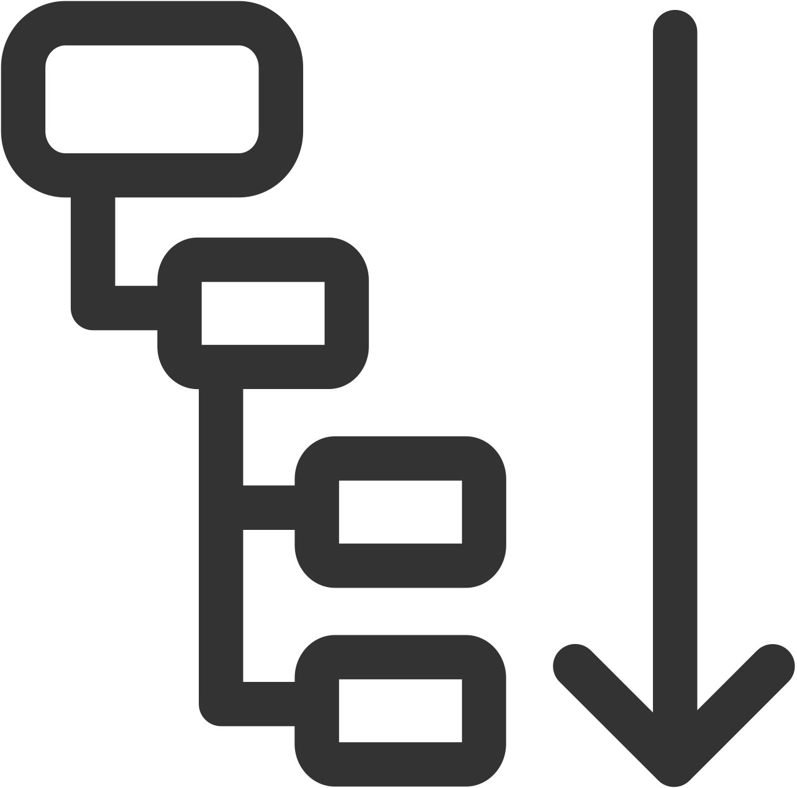

Hardware Configuration Editor
The Hardware Configuration editor is available in the list of editors from the System pad.
In this editor is configured the communication of the application with the hardware devices and / or with communication protocols.
The hardware used in the project is presented under the following form:
-
Hardware elements can be added or removed within the Hardware Configuration editor, displaying the element Type.
-
Parametrization can be performed in the Value column (for example, busCycleTime, BUS_ID, etc.). The symlink definition can either be typed directly in the column, or inserted from the Symbolic Links pad by drag and drop.
-
Comments can be added.
-
Click on a hardware element in the Name column to edit its name.
-
Watch points can be set in the Watch column during runtime.
-
The Previous port column shows the bus output of the previous element, which allows you to verify the arrangement of the bus.
NOTE: You can also verify the bus arrangement using the graphical representation of the hardware configuration network.
The columns displayed can be selected or deselected via toolbar icon  (Tools and options ). Refer to the toolbar icons descriptions.
(Tools and options ). Refer to the toolbar icons descriptions.
Use the import and export commands to re-use a configuration.
Adding New Hardware Elements
There are several options for inserting new hardware elements:
-
Drag and drop elements from the Solution Explorer.
-
Using the toolbar, which is located on the upper edge of the Hardware Configuration editor. Click the (Add new master HW-CAT) or (Add new HW-CAT) buttons.
-
Via context menu, by right-clicking the configurator field. Depending on the element on which the click has been made, different actions are available. If it is required, for example, to add IO-terminals to a coupler, right-click on the appropriate coupler item within the list and select Add in the context menu.
Context Menu
|
Step |
Description |
|---|---|
| Add |
Opens the Add window. This window displays a tree-form list of bus or device types that can be added to the currently selected element. For example, if a Modbus element is selected in the Hardware Configuration editor, only Modbus device types are listed. Select a bus or device type to add. Optionally, edit the Name of the element. To add more than one element of the same type, enter the number of elements to be added in the Count box. In this case, unique names are created by appending an underscore (_) and the next available integer to the name of the element. Click Add to add the element(s) to the Hardware Configuration editor. The Add window remains open after adding an element so you can continue to add elements. Selecting a different element in the Hardware Configuration editor automatically updates the Add window to show only the bus or device types available in that context. Click Close to close the window. |
| Remove |
Removes the selected element |
| Reset |
Restores the default setting for a selected VTQ input or output value that was previously edited. Enabled only for VTQ input and output values that have been changed. |
| Copy |
Copies the selected hardware object. |
| Paste |
Pastes the previously copied hardware object in the selected location, provided the location is permissible. |
| Expand |
Expands the selected node |
| Collapse |
Collapses the selected node |
| Expand All |
Expands all nodes within the selected element |
| Collapse All |
Collapses all nodes within the selected element |
| Validate Configuration |
Performs a validation check of the hardware configuration. On completion, a message is displayed that indicates the hardware configuration is either:
NOTE: This command exists only at the bus master level.
|
| Properties |
Opens a dialog window to show the properties of the selected element. The number and type of entries in the properties window are hardware-dependent. In some cases, this dialog is needed to define the busID as well (otherwise a detected error message appears e.g. "The required attribute 'busId' is missing."). The properties dialog can also offer some additional functions when they are supported by the hardware. For example the module MIO 100 offers the possibility to configure universal I/O ports. |
| Reset Properties |
Restores the default setting for all properties that were previously edited. Enabled only if one or more property values have been changed. |
| Watch |
Sets respective watch points, depending on where the right-click was executed. That means, for example, all ports of a module / terminal when the right-click has been examined at the module / terminal itself, or just some selected ports of one or several modules or terminals. Watched values are displayed in the Watch column . If some of the watched points are forced (via HMI - Faceplates) the forced values are shown as well. Precondition for setting watch points is that the project is deployed to the controller and the studio is logged into the controller (see the Login command of the Deploy and Diagnostic editor). This watch dialog serves to set watch points at the ports of the hardware. Information for setting watch points at other function blocks are located at Watch. |
| Remove Watch |
Removes the selected watch points. An eventually set force of some ports has also to be removed via HMI again. Removing the watch points will not delete forces. |
| Parametrize with |
Depending on the hardware element type, an entry of this kind can be enclosed in the context menu. A click on this entry opens the respective faceplate directly, without starting the entire HMI. |
| Help |
Opens the help of the respective HW module of the HW library. |
| Configure EtherNet/IP scanner1 |
Opens the EtherNet/IP Configurator that you can use to configure the properties of an EtherNet/IP fieldbus scanner and adapters. |
| Import EtherNet/IP Scanner1 |
Opens the Open dialog, which you can use to import a .zip file that contains a previously saved EtherNet/IP fieldbus scanner configuration. |
|
1 Available only for EIPSCANNER HWCAT. |
|
The hardware ports of the terminals can be linked here directly with variables from the process image by dragging an input or output variable via drag & drop from the Symbolic Links pad on the respective port within the Hardware Configuration editor (see also Symbolic Links).
HW Configuration Editor Toolbar
|
Icon |
Description |
|---|---|
|
Add new master HW-CAT |
Opens the Add Bus dialog for adding a new device master. The device master is the precondition that hardware elements can be inserted. The selection of the device master defines which hardware elements are offered for selection subsequently. A dialog opens which offers the available device master types, depending on the referenced hardware library. Complete the following fields: Name: The name of the master can be defined in the Name column. When the field is left empty the name of the type is automatically adopted by selecting the type. When adding several masters, a number is added to the name and increased automatically. Count: The number of added masters can be defined in field Count. Element Type: The type Bus is always available. The availability of other types depend on the selected node in the Hardware Configuration editor. Type: The available options are offered in the list at Type(library dependent). The selected element can be added by clicking Add. The number of elements added is determined by the Count setting. Add: Adds the specified number and type of items. Close: Closes the dialog and saves the changes. Help: Opens context sensitive help for this dialog. |
|
Add new HW-CAT |
Available only when a master or a suitable hardware module is selected in the Hardware Configuration editor. A dialog opens that lets you insert hardware elements to the Hardware Configuration editor. Complete the following fields: Name: The name of the element to be added next can be defined in field Name. When the field is left empty the name of the type is automatically adopted by selecting the type. When adding several masters a number is added to the name and increased automatically. Count: The number of added elements can be defined in field Count. Element Type: Presents a library-dependent selection of available element types. Select an element type to display the bus outputs for the selected element. If there are several bus outputs available for the selected element you can switch between the individual outputs.
NOTE: If the list doesn't offer the element you are searching for, it may be that the wrong bus output is selected. Check in the field Element Type if there are multiple bus outputs available.
Type: Lists the available options (library dependent). The selected element can be added by clicking Add. The number of elements added is determined by the Count setting. Add: Adds the specified number and type of items. Close: Closes the dialog and saves the changes. Help: Opens context sensitive help for this dialog.
NOTE: Permissible Count and Element Type values, as well as the listed devices, are library-dependent. The content of this window is dynamic and defined by the selected library.
|
|
Export hardware configuration to file |
The current hardware configuration can be saved as a .HCF file. The file can be saved in the project or separately on a data medium at arbitrary storage location. |
|
Import hardware configuration from file |
Imports an already stored hardware configuration in the form of a .HCF file from an arbitrary storage location. |
|
Revert all changes and parse FB network to create hardware configuration |
Discards the changes within the hardware configuration and loads the last state from function block network instead. |
|
 Expand All |
Expands all nodes within the hardware configuration list. |
|
Collapse All |
Collapses all nodes within the hardware configuration list. |
|
Tools and options |
Opens the submenu Select Columns where you can select or deselect the columns to display from a drop down list. |


Using Export and Import to Re-use a Previously Configured Hardware Configuration
You can use the Hardware Configuration editor to duplicate a hardware configuration by first exporting the configuration, and then importing the same exported hardware configuration. This process re-creates hardware configurations when no equivalent configuration was defined.
In some cases, you may unintentionally import a hardware configuration when an existing configuration was already created, or you may have imported the same hardware configuration twice. As a result, EcoStruxure Automation Expert displays the duplicate configuration with a red icon.
Follow these steps to preserve a consistent configuration:
|
Step |
Action |
|---|---|
|
1 |
Import the configuration using the Import hardware configuration from file button |
|
2 |
Click Save. If a duplicate configuration is imported, the duplicate configuration is displayed with a red icon. |
|
3 |
Delete the duplicate configuration by selecting it and clicking Remove. The duplicate configuration is deleted. |
|
4 |
Click Save. The configuration is saved. |
|
5 |
Exit the System editor. |
|
6 |
Return to the System editor. Select the Hardware Configuration editor. displays the Recovery dialog. |
|
7 |
Click OK to close the Recovery dialog. Your hardware configuration will be correctly imported. |